Creating & Executing a Job
First of all, let us take a look at how to construct a job. To do so, you need to drag some modules to your desktop:

Each module is unique; therefore, your recipe for each job will be different. Here is a simple recipe to show you how to execute a job.
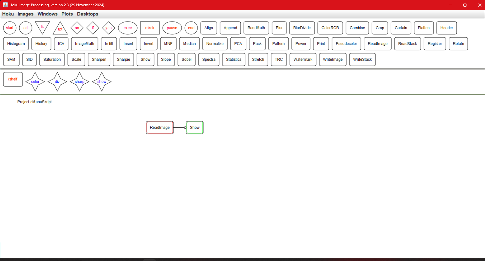
Once you connect two modules together, you need to press the left click to draw around your task, turning the recipe into a “star”.
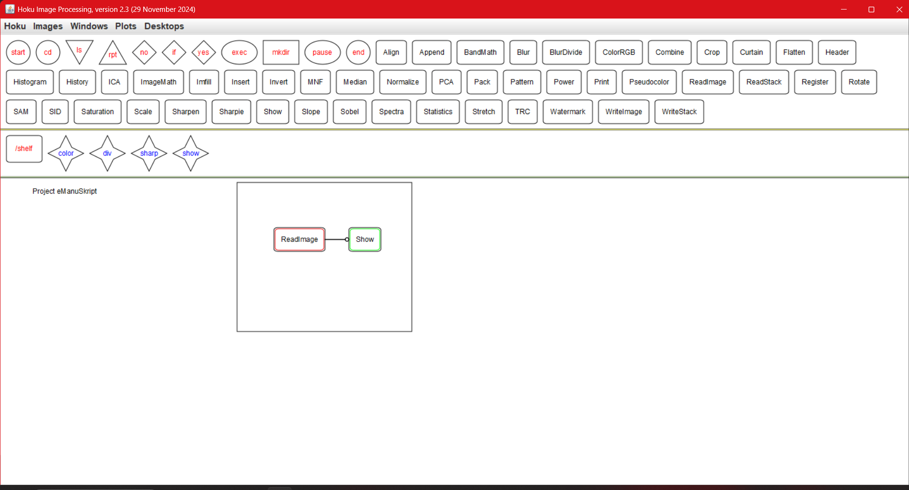
And done! Now your first “job” is ready to be executed. Click right on the star you have created, and pick “execute.”
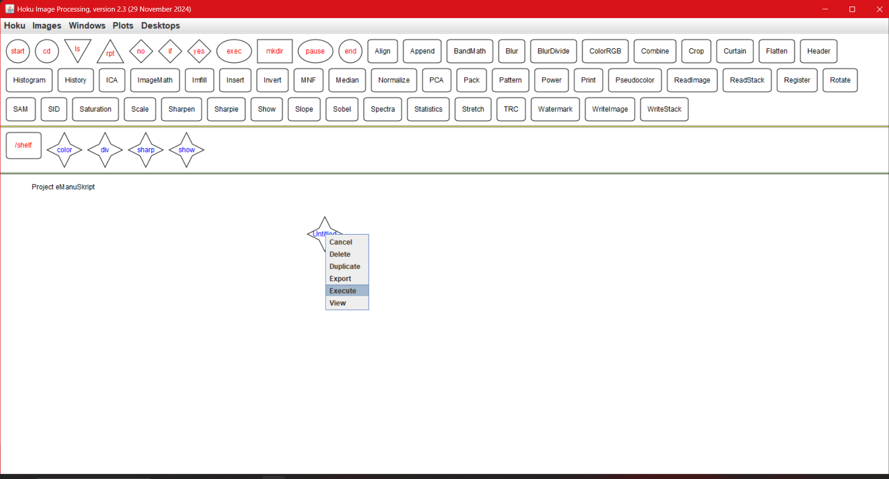
ReadImage and Show
The ReadImage module is our very basic first step in any workflow: It loads an image file into Hoku so we can start processing it.
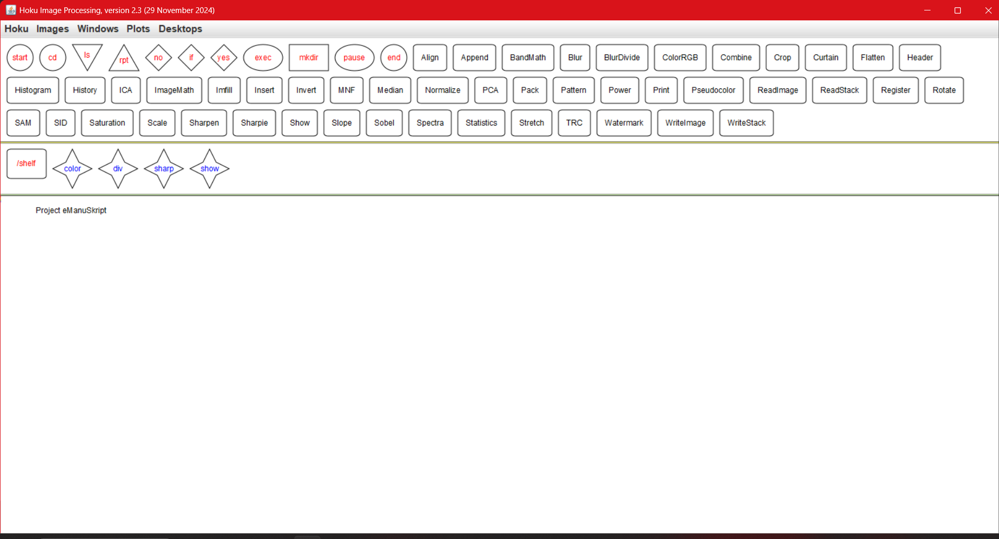
It supports several file types, including TIFF, ENVI, PNG, BMP, JPEG, and TEXT. TIFF and ENVI files can contain multiple bands, while JPEG images are limited to 1 or 3 bands.
We can also read only part of an image by specifying a window. The window parameters define the x and y position (starting at 0) for the upper-left corner, followed by the width and height in pixels. This allows us to focus on a specific area without loading the entire file.
This process will be replicated later on, when we want to select a specific region of interest for other modules/operations, such as in PCA, ICA, or SAM.
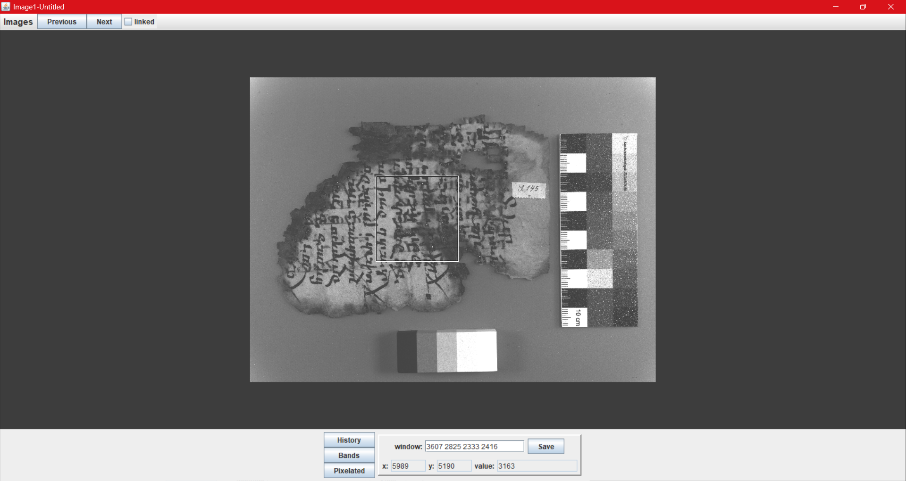
For TIFF files, multiple pages may exist within one file, numbered from 0 to N–1. The default multipage image number is 0, but we can choose another if needed.
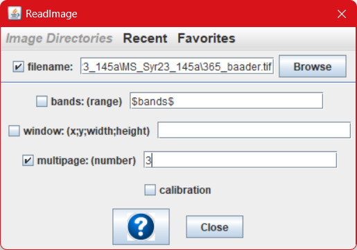
If we check the calibration option, Hoku will automatically apply any existing calibration file found in the same directory as our image. This helps us adjust pixel values based on a prior calibration process performed with the Statistics module.
However, if we enable calibration but no calibration file exists, the job will not run.
We can also choose to read only specific bands. Similarly to the multipage option, band numbers start at 0 and go up to N–1, where N is the total number of bands in our image. We can list individual bands (like 0 2 4) or ranges separated by colons (21:40;55;61:70) to select multiple sets.
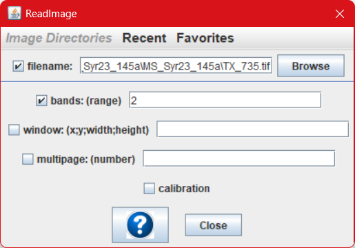
We can also choose to read only specific bands. Like the multipage option, band numbers start at 0 and go up to N–1, where N is the total number of bands in our image. We can list individual bands (like 0 2 4) or ranges separated by colons (21:40;55;61:70) to select multiple sets.
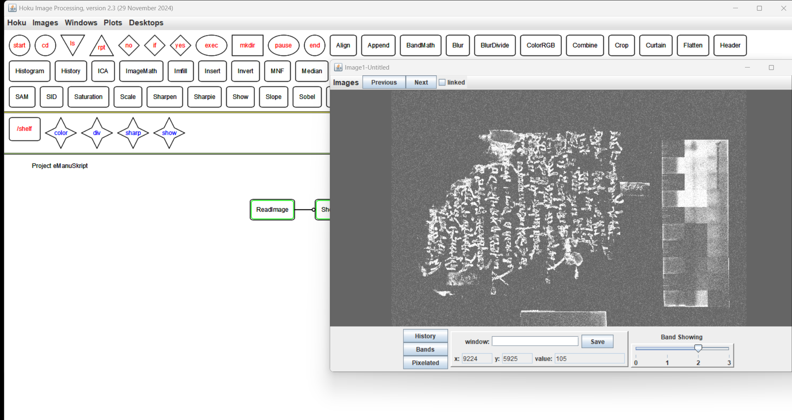
To average across a range of bands, we can replace the colon with a (+). For example, 21+40;55;61+70 will produce three output bands, two of which are averaged across those ranges.
ReadImage works with Byte, Integer, or Float data types and outputs the same format as the input.
When connecting ReadImage to another module, whether the connections are from the left, top, or right does not play a major role. In fact, Hoku only cares that we correctly specify the connection when selecting the input or reference.
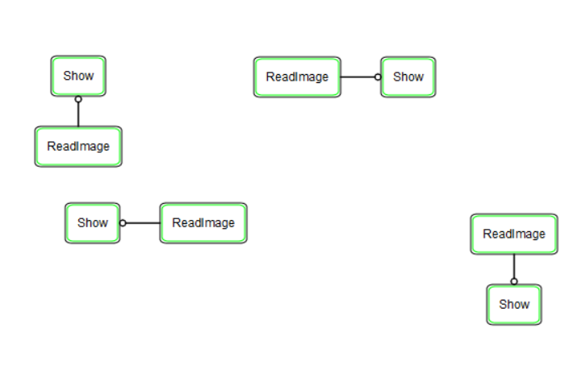
WriteImage
The WriteImage module saves your processed image to disk, and it supports six formats: TIFF, ENVI, JPEG, PNG, BMP, and Text.
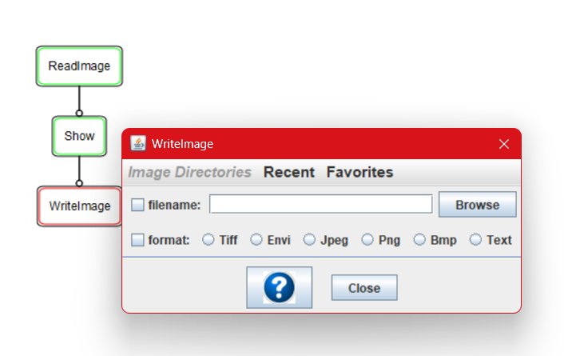
Make sure the filename ends with the correct extension: .tif, .hdr, .jpg, .png, .bmp, or .txt.
TIFF is the preferred archival format. ENVI is useful for scientific or computational work. JPEG should only be used for display, since it uses lossy compression. Lossy compression. is a data encoding method that reduces file sizes by permanently eliminating redundant or less important information, particularly in images, audio, and video, and it is irreversable.
JPEG compression reduces file size by removing information. The quality slider goes from 0.0 (lowest quality, smallest file) to 1.0 (highest quality, largest file).
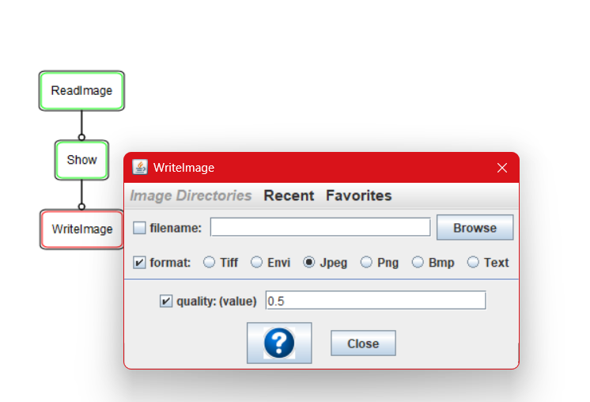
TIFF and ENVI can store 8- or 16-bit integers, 32- or 64-bit floating-point data. JPEG, PNG, and BMP can only store 8-bit images (grayscale or color). TIFF files default to uncompressed, but you can choose LZW or Deflate compression. The best compression comes from Deflate + Differencing.
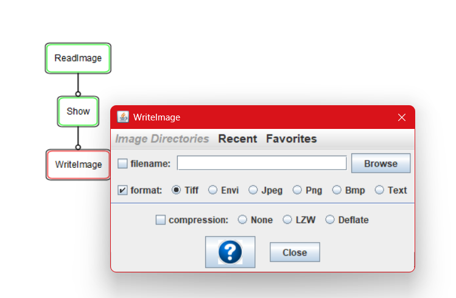
ENVI images come in two files, a header (.hdr) or a data file. The interleave setting controls how pixels and bands are stored. BSQ is the fastest when viewing one band at a time; BIP is the best for viewing all bands together (like spectra). BIL is a compromise between the two.
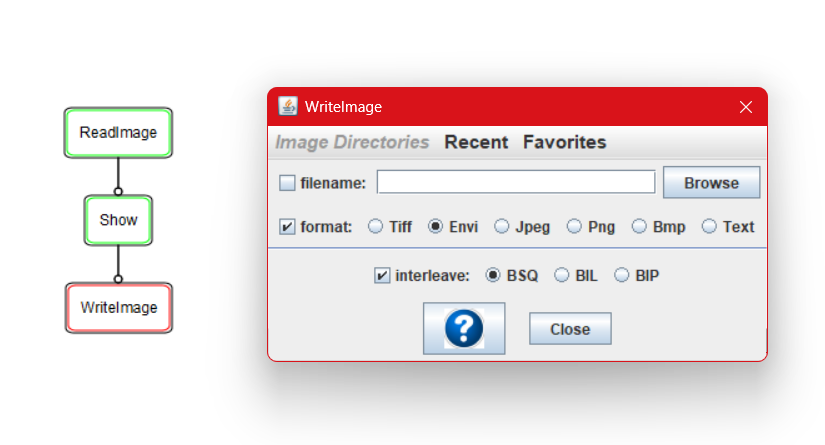
Enhancement
1 — Pack
Let us take a look at how the Pack module works. Pack adjusts the contrast of your input image and converts it into 8-bit unsigned integers. By default, it looks at the statistics of the entire image and stretches the values so that everything becomes easier to see.
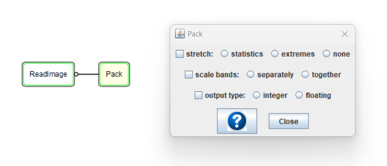
If you want, you can define a window. This window tells Pack to compute the statistics only from a selected region of the image.
Instead of using “statistics,” you can also switch to “extremes.” This option stretches the image between the minimum and maximum pixel values. Pack can also output other formats such as 16-bit, 32-bit float, or 64-bit float.
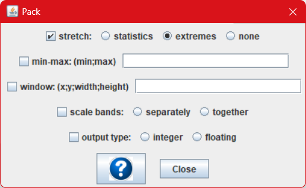
Next, let’s talk about “Show”. Show always converts non-8-bit data into 8-bit integers internally, so it can display the image on your screen. Don’t worry: the original values stay in memory and are passed along to the next modules.
If you want to write out an image for general use or distribution, it must be converted to 8-bit using Pack before sending it to WriteImage.
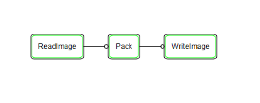
WriteImage can write non-8-bit images, but keep in mind: many external viewers will not be able to display them.
2 — Stretch
Moving on to the “Stretch” module, which enhances your image by adjusting its contrast.
A linear stretch spreads the pixel values between a chosen minimum and maximum, mapping them to black and white. The output will keep the same format as the input, whether that’s unsigned integers or floating-point values.
You can type in your own min and max values. If you leave these fields empty, Stretch will automatically use the minimum and maximum found in the image. The sqrt and log options apply a square-root or logarithmic transformation to each pixel. These always produce floating-point output.
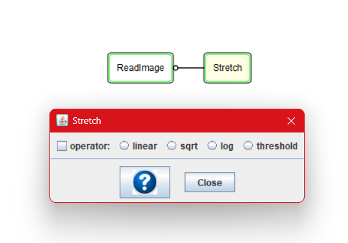
The threshold option creates an 8-bit image with only two possible pixel values. 255 for pixels greater than the threshold; 0 for pixels less than or equal to the threshold. You must specify the threshold value yourself.
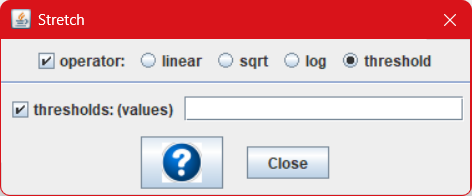
If your image has multiple bands, you can either provide a separate threshold for each band or enter a single value that applies to all of them.
3 — Blur/Sharpen
Blur and Sharpen modules do exactly what they say: they can be used to Blur or Sharpen an image.
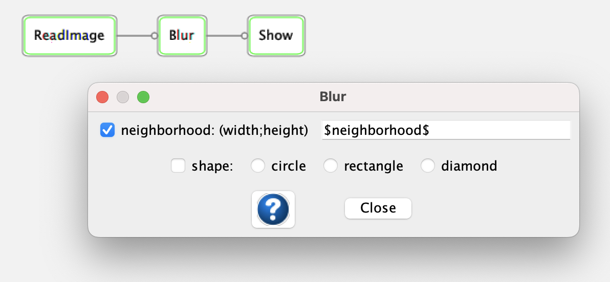
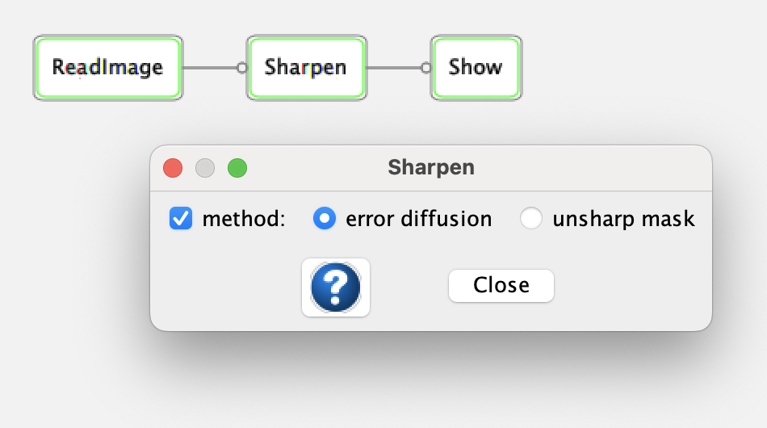
4 — Invert
This module flips the pixel values of your image. How does it work? For integer image types, the inversion is calculated by subtracting each pixel from that type’s maximum possible value. This bit might sound a little complicated, but let us give you the simple formulas:
8-bit images: output = 255 – value
16-bit images: output = 65,535 – value
32-bit integers: output = 4,294,967,295 – value
For example, in an 8-bit image a dark gray value of 35 becomes 220, a light gray. 0 (black) becomes 255 (white), and the other way around. For floating-point images, the inversion is simply output = –value So a pixel with value 0.2904 becomes –0.2904.
By default, Invert applies to all bands in the image. Would you like to select specific bands? Then you can specify exactly which bands you want to invert. Band numbers are listed individually, separated by spaces or semicolons.
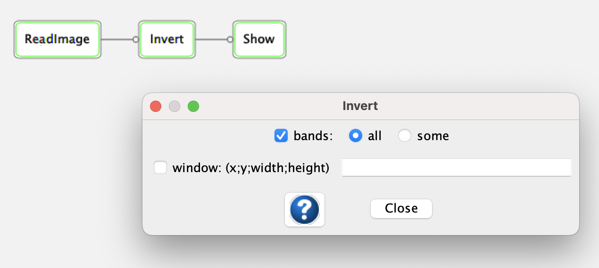
As an example, in a standard 8-bit RGB image (3 bands), to invert only the blue (0) and red (2) channels while leaving green (1) untouched, you would enter: 0;2
In a floating-point PCA cube with 19 bands, if you want to invert bands 0, 2, 4, and 9, you would enter: 0;2;4;9
In both cases, the entire image is passed forward with only the selected bands having their values flipped.
Modifications:
1. Append
Append module is used when a process requires multiple input images. Some modules need more than one image to work, and Append helps you combine them correctly. Append takes two inputs. In the interface, the “input” image and the image you want to append can be connected on the left, right, top, or bottom.
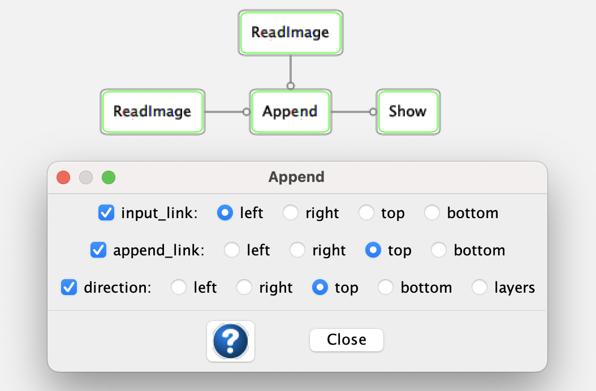
The output will be a single combined image.
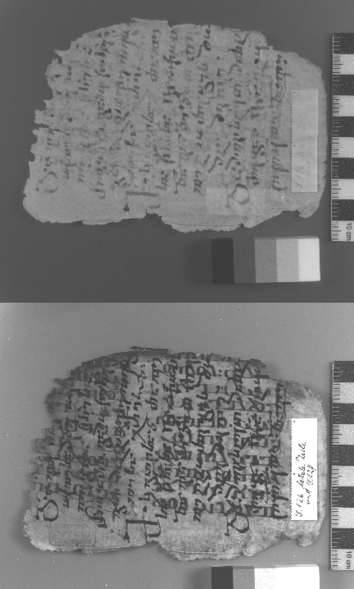
Göttingen, Staats- und Universitätsbibliothek, Ms_Syr23 S. 126 (Append - Hoku)
You can also use Append to combine bands, when “layers” is selected: All the bands from the input image come first, followed by all the bands from the append image. The result is a single image that contains the full set of bands from both images.
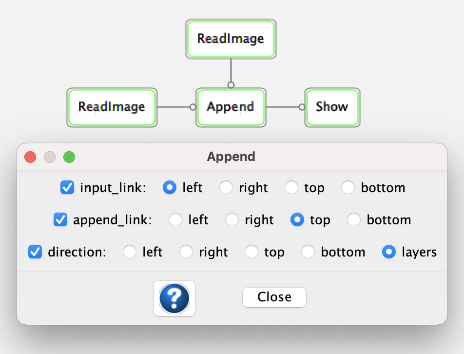
2. Crop
This feature allows us to cut out a specific rectangular region of our image or extract only certain spectral bands.
When we are cropping spatially, Hoku allows us to define a window by setting the (x, y) position of the upper-left corner, along with the width and height (which are in pixels) of the region we want to keep. The coordinate system starts at the top-left corner of the image, where x = 0 on the far left and increases to the right, while y = 0 is at the top and increases downward. If we don’t specify a window, Crop will use the entire image by default.
In addition to that, crop can also extract specific bands from a multi-band one. Band numbers start at 0 and go up to N-1, where N is the total number of bands. Yet, we can also list bands individually (like 0 2 4) or separate them with semicolons.
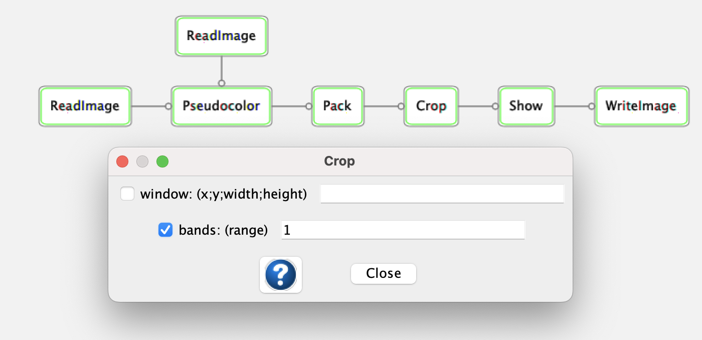
We can also specify ranges using a colon. For instance, indicating 0:1 on a color image would extract only the red and green bands. In a hyperspectral cube, we could enter something like 21:40;55;61:70 to select 31 specific bands.
If we want to average across band ranges instead of reading each band separately, we can simply replace the colon with a (+). For instance, entering 21+40;55;61+70 would create just three output bands, two of which are averaged across those ranges.
We can also specify both a spatial window and a set of bands, as the Crop feature will output only that region and only those selected bands.
3. Rotate
This module lets you rotate an image or flip it, depending on what you need.
Rotate can turn your image by 90° increments (90°, 180°, 270°) or by any custom angle you type in. You can also create a mirror image, either horizontally, or vertically.
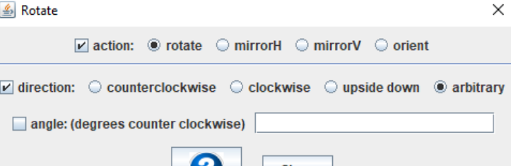
The “orient” option reads the TIFF Orientation flag if it exists in the TIFF header. When this is enabled, Rotate will either apply the rotation specified by the Orientation flag, or leave the image as it is and simply remove the flag.
This is especially helpful for correcting images that appear rotated when loaded from certain cameras or scanners.
Readstack
The ReadStack module operates in the same logic as ReadImage, but instead of loading a single file, it lets us load multiple images at once and combines them into one multi-band image.
Each image we select becomes one or more bands in the final stacked image. The files are read in the same order they appear in the list, so we need to make sure the sequence matches the way we want the bands to be arranged.
It is important that all images in the stack must have the same width, height, and alignment. However, each image can have any number of spectral bands, arbitrarily.
Just like in ReadImage, we can specify a window to crop a specific region from each image as they are read. The same parameters apply: x and y for the top-left corner, followed by width and height in pixels.
If we enable the calibration flag, ReadStack will automatically use any calibration file found in the same directory as our selected images. This process is identical to the calibration option in ReadImage: it adjusts data using a file previously created with the Statistics module. If calibration is checked but no file exists, the job will stop.
To the right of the file list, we can find three buttons that make managing our input files easier:
“Add” to browse and add new files to your stack.
“Clear” removes all filenames from the list.
“Count” shows how many files were selected.
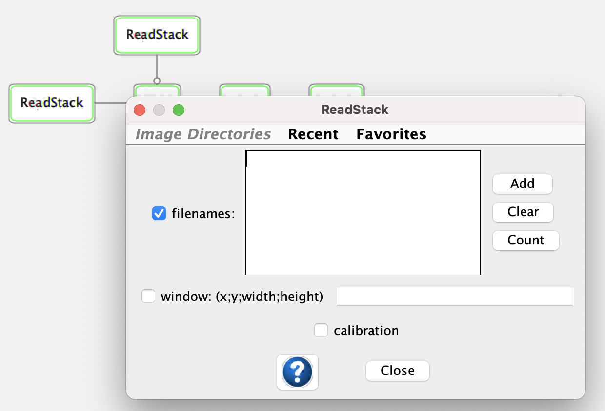
Just like in ReadImage, it does not matter whether our module connections come from the left, top, or any other direction. What matters is that we assign the correct input or reference when linking modules together. The orientation of the lines in the workspace will not change how the job executes.
Are you interested in knowing more about Hoku? Meet us in the following tutorial for intermediate Hoku features!
GNU Free Documentation License 1.3